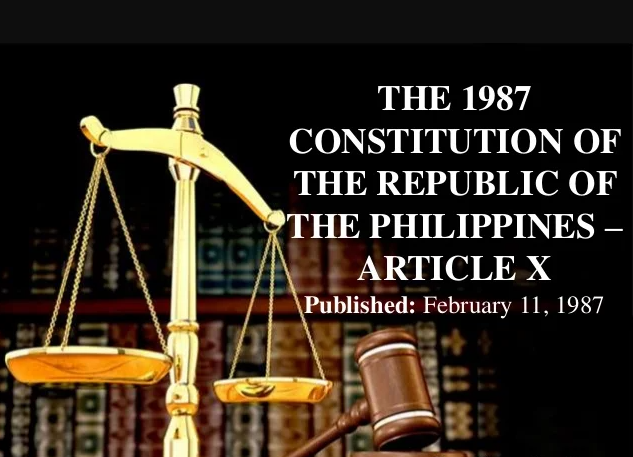
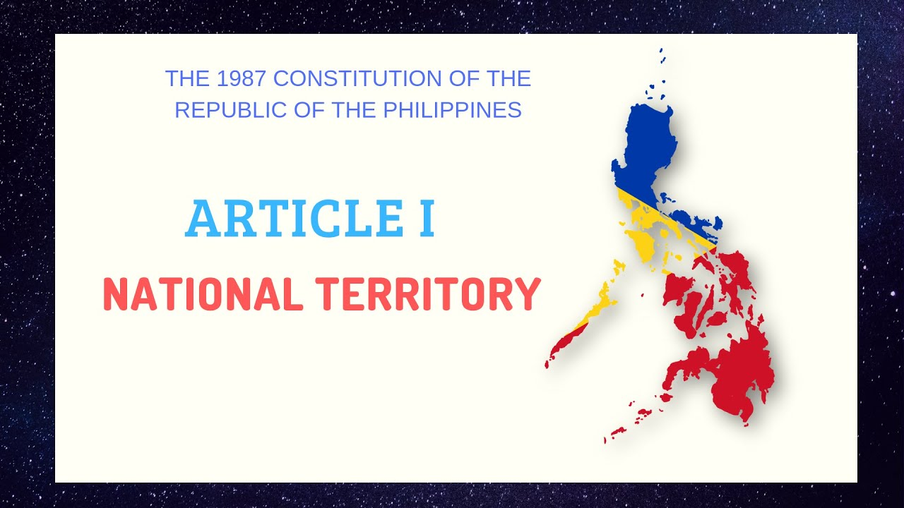
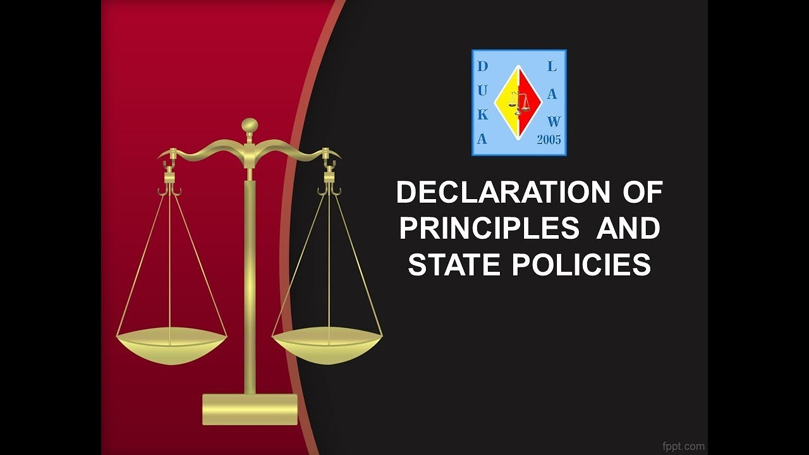

THE PHILIPPINE CONSTITUTION
The Constitution of the Philippines (Filipino: Saligang Batas ng Pilipinas or Konstitusyon ng Pilipinas) is the constitution or the supreme law of the Republic of the Philippines. Its final draft was completed by the Constitutional Commission on October 12, 1986, and ratified by a nationwide plebiscite on February 2, 1987.
Three other constitutions have effectively governed the country in its history: the 1935 Commonwealth Constitution, the 1973 Constitution, and the 1986 Freedom Constitution.
The earliest constitution establishing a "Philippine Republic", the 1899 Malolos Constitution, was never fully implemented throughout the Philippines and did not establish a state that was internationally recognized, due in great part to the eruption of the Philippine–American War.
Structure and Contents
The preamble and eighteen self-contained articles with a section numbering that resets for every article.
Preamble
The preamble and eighteen self-contained articles with a section numbering that resets for every article.
The opening text introduces the constitution and the people as the source of sovereignty. It follows past constitutions, including an appeal to God. The preamble reads:
We, the sovereign Filipino people, imploring the aid of Almighty God, in order to build a just and humane society and establish a Government that shall embody our ideals and aspirations, promote the common good, conserve and develop our patrimony, and secure to ourselves and our posterity the blessings of independence and democracy under the rule of law and a regime of truth, justice, freedom, love, equality, and peace, do ordain and promulgate this Constitution.Article I – National Territory
The national territory comprises the Philippine archipelago, with all the islands and waters embraced therein, and all other territories over which the Philippines has sovereignty or jurisdiction, consisting of its terrestrial, fluvial, and aerial domains, including its territorial sea, the seabed, the subsoil, the insular shelves, and other submarine areas. The waters around, between, and connecting the islands of the archipelago, regardless of their breadth and dimensions, form part of the internal waters of the Philippines.
Article II – Declaration of Principles and State Policies
Article II lays out the basic social and political creed of the Philippines, particularly the implementation of the constitution and sets forth the objectives of the government. Some essential provisions are:
- The Philippines is a democratic republic
- Renunciation of war as a form of national policy
- Supremacy of civilian over military authority
- Separation of church and state (inviolable)
- Pursuit of an independent foreign policy
- Abrogation of nuclear weaponry
- Family as the basic unit of the state
- Role of youth and women in nation-building
- Autonomy of local governments
- Equal opportunity for public services and the prohibition of political dynasties
- Protection and advancement of the right of the people to a balanced and healthful ecology
Article III – Bill of Rights
rticle III enumerates specific protections against the abuse of state power, most of which are similar to the provisions of the U.S. Constitution. Some essential provisions are:
- a right to due process and equal protection of law
- a right against searches and seizures without a warrant issued by a judge
- a right to privacy
- The right to freedom of speech and expression, freedom of the press, freedom of assembly, and the right to petition
- The free exercise of religion
- a right of abode and the right to travel
- a right to information on matters of public concern
- a right to form associations
- a right of free access to courts
- the right to remain silent and to have competent legal counsel
- a right to bail and against excessive bail conditions
- a right to habeas corpus
- the right to a speedy trial
- the right against self-incrimination
- the right to political beliefs and aspirations
- a prohibition against cruel, degrading, or inhuman punishment
- protection providing for no imprisonment for debt
- the right against double jeopardy
- prohibition of ex post facto laws and bills of attainder.
Similar to U.S. jurisprudence and other common law jurisdictions, the scope and limitations of these rights have largely been determined by the Supreme Court through case law.
Article IV – Citizenship
Article IV defines the citizenship of Filipinos. It enumerates two kinds of citizens: natural-born citizens and naturalized citizens. Natural-born citizens are those who are citizens from birth without having to perform any act to acquire or perfect Philippine citizenship. The Philippines follows a jus sanguinis system where citizenship is mainly acquired through a blood relationship with Filipino citizens. Natural-born citizenship forms an important part of the political system as only natural-born Filipinos are eligible to hold high offices, including all elective offices beginning with a representative in the House of Representatives up to the President.
Article V – Suffrage
Article V mandates various age and residence qualifications to vote and a system of secret ballots and absentee voting. It also mandates a procedure for overseas and disabled and illiterate Filipinos to vote.
Article VI – Legislative Department
Article VI provides for a bicameral legislature called the Congress composed of the Senate and the House of Representatives. It vests upon Congress, among others, the power of investigation and inquiry in aid of legislation,[10] the power to declare the existence of a state of war,[11] the power of the purse,[12] the power of taxation,[13] and the power of eminent domain.
Article VII – Executive Department
Article VII provides for a presidential form of government where the executive power is vested on the President. It provides for the qualification, terms of office, election, and power and functions of the President. It also provides for a vice president and for the presidential line of succession.
Article VIII – Judicial Department
Article VIII vests the judicial power upon the Supreme Court and other lower courts as may be established by law (by Congress). While the power to appoint justices and judges still reside with the President, the President from a list of at least three nominees prepared by the Judicial and Bar Council for every vacancy, a body composed of the Chief Justice of the Supreme Court, the Secretary of Justice, the Chairs of the Senate and House Committees on Justice, and representatives from the legal profession.
Article IX – Constitutional Commissions
Article IX establishes three constitutional commissions, which are governmental bodies that are independent of the three main branches of government. These are the Civil Service Commission, the Commission on Elections, and the Commission on Audit.
Article X – Local Government
Article X pursues for local autonomy and mandates Congress to enact a law for the local government, now currently the Local Government Code.
Article XI – Accountability of Public Officers
Article XI establishes the Office of the Ombudsman which is responsible for investigating and prosecuting government officials. It also vests upon the Congress the power to impeach the President, the Vice President, members of the Supreme Court, and the Ombudsman.
Article XII – National Economy and Patrimony
Article XII lays down the goals and objectives of the Philippine government in terms of wealth distribution, division of goods and services and to offer job opportunities to elevate the lives of Filipino people. This section also provides important provisions such as:
- Promote effective industrialization and aim for a full employment of its people
- All natural resources within the Philippine territory shall be owned by the State
- Protect the rights of the indigenous cultural communities
- Businesses, organizations and other institutions shall be subject to the intervention of the State
Article XIII – Social Justice and Human Rights
Article XIII divulge the utmost responsibility of the Congress to give the highest priority in enactments of such measures which protects and enhances the rights of all the people to human dignity through affirming that present social, economic and political inequalities as well as cultural inequities among the elites and the poor shall be reduced or removed in order to secure equitable welfare and common good among Filipino people. It also establishes the role of the Commission on Human Rights which ensures appropriate legal measures for the protection of human rights of all the persons within the Philippines as well as Filipinos residing abroad. Moreover, this section also lays down salient provisions such as:
- Protection of labor, be it local or overseas in order to promote full employment and equal opportunities for all.
- Protection of the rights and giving of support to independent Filipino farmers and fishermen among local communities for the utilization of their resources without foreign intrusion, together with the provision and application of Agrarian and Natural Resources Reform for the development of the lives of the people.
- Securing of the lives among the underprivileged citizens through Urban Land Reforms and Housing.
- Adoption and integration of affordable and competent medical care and health services for the welfare of every Filipino people.
- Recognition of the rights of women in workplace for the realization of their full potential in providing service to its nation.
- Recognition of the role and the rights of people's organizations.
Article XIV – Education, Science and Technology, Arts, Culture and Sports
- The State shall exercise reasonable supervision and regulation of all educational institutions, whether public or private.
- The guiding principle on education in general shall be the protection and promotion of the right of all citizens to quality education at all levels as well as taking appropriate steps to make education accessible to all.
- The subject of science and technology was given special attention through the formulation of several provisions on development and research incentives.
- The arts and letters remain under the patronage of the State which must be concerned in the protection and enrichment of our culture.
- For the first time, the subject of sports is given a specific section. The citizenry should not only be mentally and morally strong but must also be physically strong.
Article XV – The Family
Article XV establishes the recognition of the state on the Filipino family as the basic foundation of the nation as it shall reinforce and bolster its solidarity and steadily promote its development. Alongside with this, it also states important provisions such as:
- Protection of marriage by the state as it is recognized as the foundation of the family and is an inviolable institution.
- Provision of policies and programs subject to every Filipino family assuring the people's welfare and social security.
- Protection of the rights of spouses with responsible parenthood to found a family in accordance with their religious convictions.
- Recognition and protection of the rights of every Filipino child.
Article XVI – General Provisions
Article XVI contains several general provisions, such as a general description of the national flag, the establishment of the Armed Forces of the Philippines and a police force (presently the Philippine National Police), the regulation of mass media and advertising industries, the doctrine of sovereign immunity, and others.
Article XVII – Amendments or Revisions
Article XVII establishes the methods by which the Constitution may be amended or revised. Amendments may be proposed by either: a) a three-fourths vote of all Members of Congress (called a Constituent Assembly), b) a Constitutional Convention, or c) a petition of at least twelve percent of all registered voters, and at least three percent of registered voters within each district (called a People's Initiative). All amendments must be ratified in a national referendum.
Article XVIII – Transitory Provisions
Article XVIII establishes provisions to allow a clean transition from the preceding provisional constitution to the new Constitution. This includes provisions for directing the elections of the first members of the new Congress and of the President and the Vice President, specifying the current courts and the term limits of judges, specifying the initial salary for key members of government, mandating the newly elected Congress to pass laws to fulfill obligations set by these transitory provisions, and defining grace periods and limitations for previous treaties, laws, orders, and other instruments. This article also establishes that the new Constitution will take effect when ratified by a majority of votes in a plebiscite.